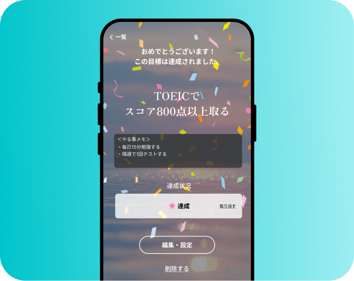
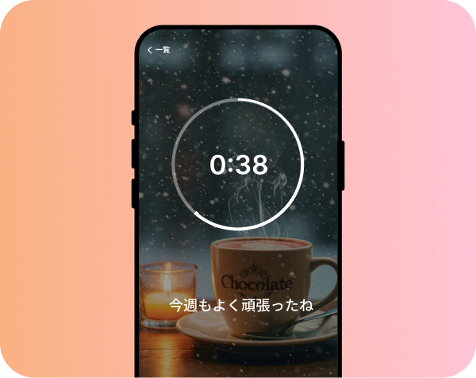
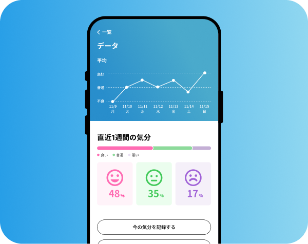

会員登録・ログインなし。個人データを収集せずに利用できます。

半年後・1年後の理想の自分を思い描きながら、目標をセット。日々の小さな一歩を記録し、達成できたら自分をねぎらう時間をつくります。

自分への言葉で心を整える時間。一番の味方である自分に、あたたかい言葉をかけてみる。「今日もよく頑張ったね」、そのひと言から。

今の気分を、そのまま記録するだけ。良いも悪いもなく、ありのままの感情を受けとめて、1週間、1ヶ月の心の動きを振り返ります。